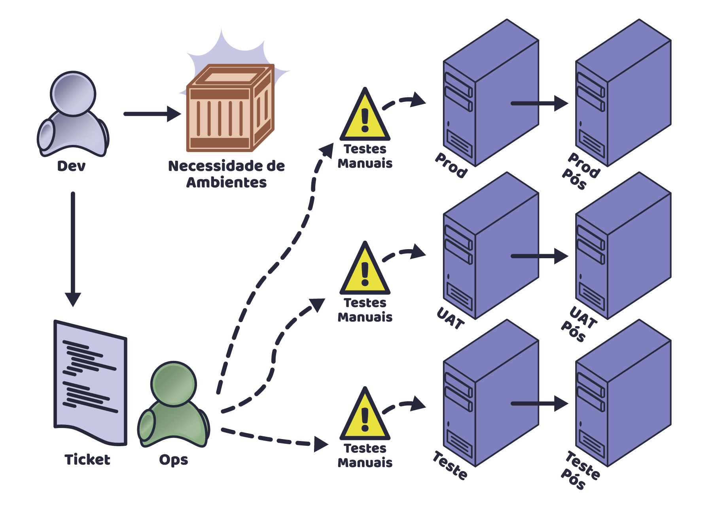
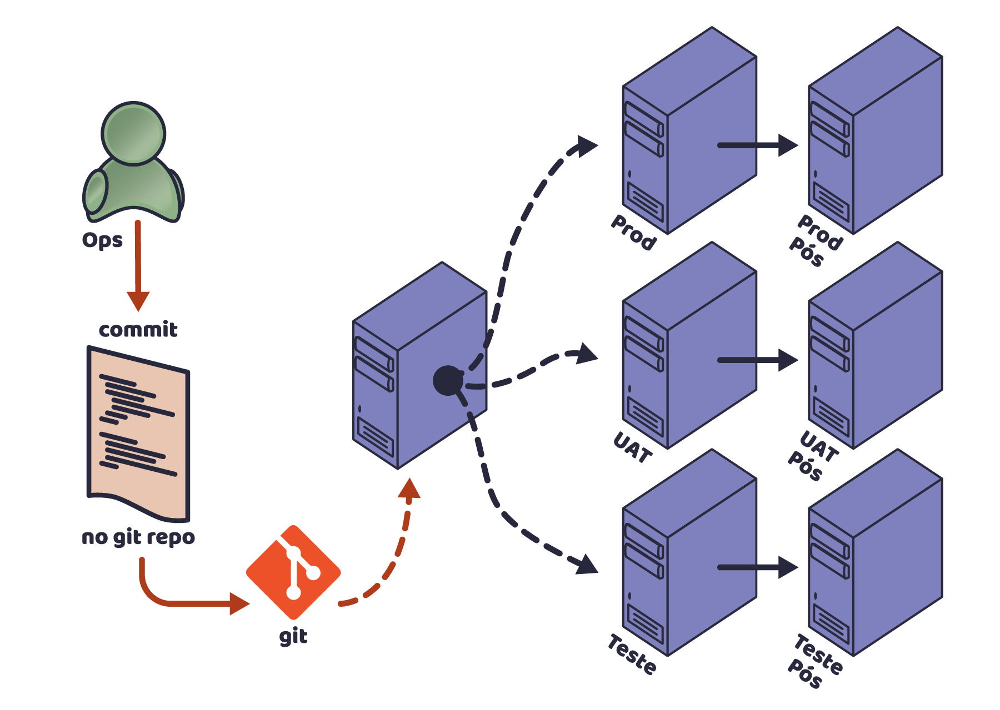
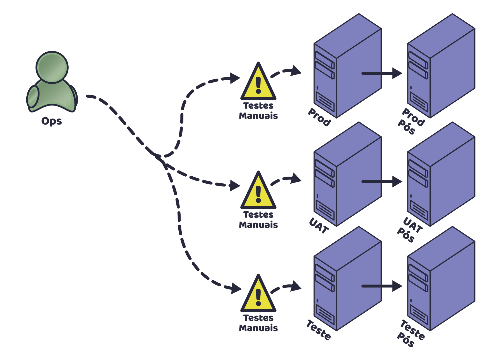
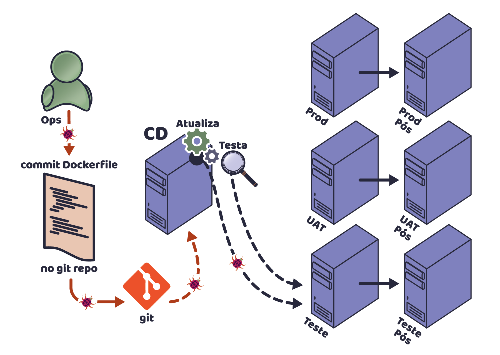

Precisamos falar sobre teste de código de infra
Criado por Rafael Gomes / @gomex
Quem sou eu
Rafael Gomes
- Soteropolitano
- Apaixonado por compartilhar
- Engenheiro DevOps
- @gomex
- Docker Captain
- gomex.github.io
O que estou fazendo
Livro

- Pague quanto quiser, inclusive nada
- Não precisa saber nada de Docker
- Licenciado em creative commons
- Atualização frequente
Para baixar: tinyurl.com/docker-devel
Por que testar?
Pergunta sincera
O que acontece quando não testo
Como era a entrega de ambientes e testes antigamente
Problemas com testes manuais
- Falta de padronização
- Testes insuficientes
- Sem rastreabilidade
- Pouco interesse em reproduzir
- Necessidade de conhecimento especializado
Criação de novos ambientes
Fazendo deploy
Modificar ambiente
Infraestrutura virou código
Fatos
- Atualização de servidores não se faz mais manual
- Equipe de redes usa SDN
- Não há como atender a demanda sem automação
- Padronização somente com automação
Automatizando
Comparando
Se infra virou código, precisamos testar, certo?
Automatizando, sem teste
Testes manuais?
Como eu faço...
TDD pra infra?
Criando seu teste de infra
Crie um arquivo chamado test_mytest.py
def test_nginx_is_installed(Package):
nginx = Package("nginx")
assert nginx.is_installed
assert nginx.version.startswith("1.2")
Comandos pra executar o teste
pip install testinfra
testinfra --sudo --connection=ssh --host=servidor_a_ser_testado test_mytest.py
Soluções para teste
- Serverspec
- Testinfra
- Inspec
- Beaker
Sysadmin - Você sabe desenvolver?
Como organizar seus testes
Duvidas?
Rafael Gomes
- Engenheiro DevOps
- gomex@riseup.net
- @gomex
- Docker Captain
- gomex.github.io